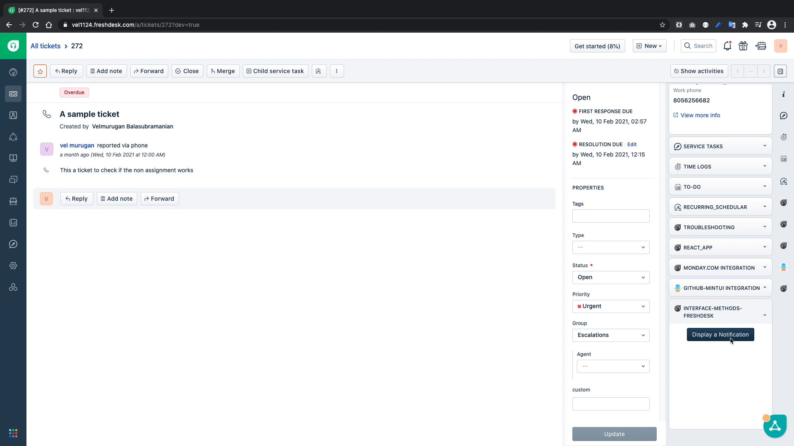
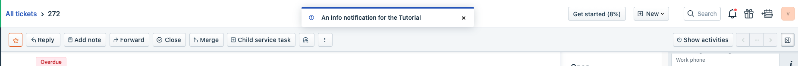
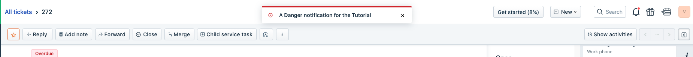
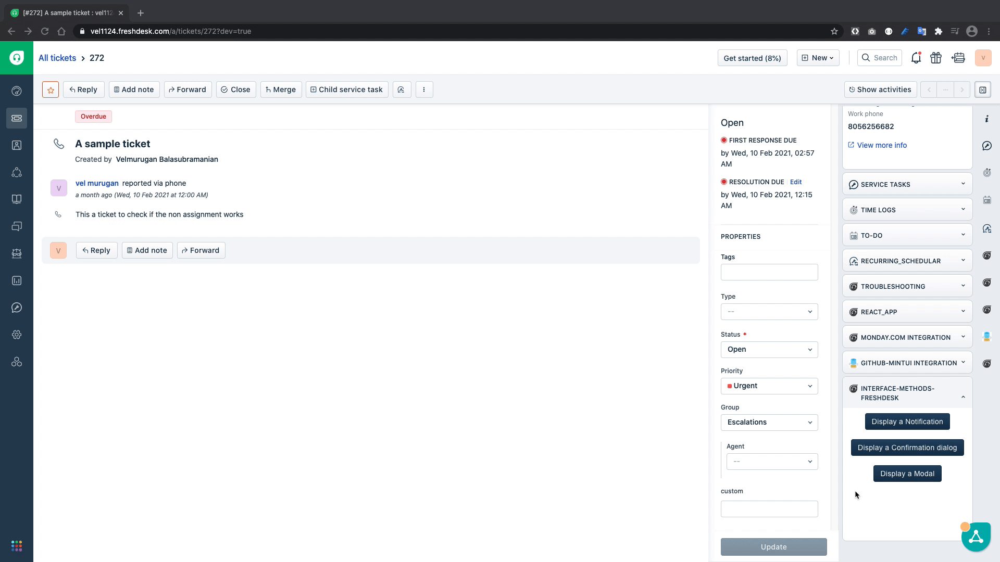
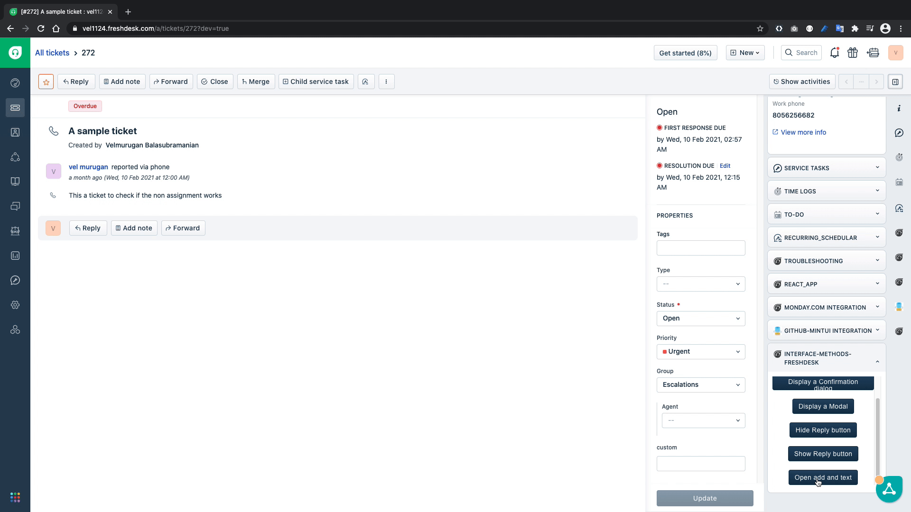

Interface Methods
A Freshworks app loads in an iframe inside the product, so your app will not have control over the Product/Parent window's interface.
An Interface method can be used to,
- Display user interface elements in the parent window like
- Display a modal on the window, to provide extra real estate to the app.
- Display a notification on the window
- Manipulate the existing UI elements like
- Show or Hide an interface element
- Set/modify values to the field in the User Interface element like text value in reply editor or cc fiels in the text editor.
Prerequisties
- Freshdesk trial account
- The latest version of FDK
- A text editor
- Basic knowledge of HTML, CSS, and Javascript
- Basic knowledge of Freshworks App development, if this is your first time developing an app for Freshworks products, It's highly recommended that you complete the following tutorials before you start this one
The interface method can be classified into two major categories
- Global Interface methods
- These interfaces methods are available in all app placeholders
- Placeholder specific Interface methods
- These interface methods, like the name suggests are specific to its placeholders.
Note
In this section we'll explore about displaying interfaces on to the browser window, we'll create a new function in app.js of the cloned app, for each interface method we're going to explore in this tutorial and invoke the function directly from a button in the index.html
To display a notification, copy the following snippet and paste it in app.js
/**
* Function to display Notification
*/
function showNotification() {
client.interface
.trigger("showNotify", {
type: "success",
message: "A notification for the Tutorial",
/* The "message" should be plain text */
})
.then(function (data) {
console.info("Notification displayed");
console.info(data);
})
.catch(function (error) {
console.error("Unable to show Notification");
console.error(error);
});
}
The above function uses the interface method exposed by the client object, to trigger a UI element, in this case a notification message.
Now that we have the showNotification(){..} function in place, let's invoke the showNotification(){..} from index.html by pasting the following snippet inside body of the index.html file
<fw-button onclick="showNotification()">Display a Notification</fw-button>
This snippet in the index.html will invoke the showNotification(){..} we defined in the earlier step.
Let us test if we show the notification on to the browser window

From the above GIF we can confirm that we can display the notification on the browser window.
We can define the type of notification that we want to display like success, warning or error which are differentiated by green, yellow or red color respectively(reference screenshots below)
Info

Warning
Danger

To show a confirmation dialog, copy the following code and paste it in app.js
/**
* Function to display a confirmation dialog
*/
function showConfirmation() {
client.interface
.trigger("showConfirm", {
title: "Sample Confirm",
message: "Are you sure you want to close this ticket?",
saveLabel: "save",
cancelLabel: "ignore",
})
.then(function (data) {
if (data.message === "save") {
alert("You clicked Save");
}
if (data.message === "ignore") {
alert("You clicked ignore");
}
})
.catch(function (error) {
console.error("Unable to show confirmation dialog");
console.error(error);
});
}
The showConfirmation(){...} function uses the interface method to show a confirmation dialog to get the user input whether to save or cancel and then based on the given input it displays an alert.
<fw-button onclick="showConfirmation()"
>Display a Confirmation dialog</fw-button
>

From the above GIF we can see that confirmation dialogue is working as intended.
Unlike notification and confirmation dialog we need a html file to show as a modal, so let's create an html file called modal.html inside the app folder.
once the file is created copy the following code into the newly created html file
<!DOCTYPE html>
<html lang="en">
<head>
<meta charset="UTF-8" />
<meta http-equiv="X-UA-Compatible" content="IE=edge" />
<meta name="viewport" content="width=device-width, initial-scale=1.0" />
<title>Modal</title>
</head>
<body>
<h3>This is a modal opened using interface method</h3>
</body>
</html>
Now that we have a template for the modal ready, let us copy the showModal(){..} function in app.js to open a modal.
/**
* Function to show a modal
*/
function showModal() {
client.interface
.trigger("showModal", {
title: "Sample Modal",
template: "modal.html",
})
.then(function (data) {
console.info("modal displayed");
console.info(data);
})
.catch(function (error) {
console.error("Unable to display modal");
console.error(error);
});
}
Let's invoke the showModal() function and test it out
<fw-button onclick="showModal()">Display a Modal</fw-button>

Now that we've covered how to display interface elements on the window, let us explore how to show or hide a user interface elements in the screen.
In this section of the tutorial we will learn how to hide the reply button from the ticket details page, and then show the same by following the drill again, copy the function to app.js, invoke it in index.html and test it out.
app.js
/**
* Function to hide the reply button in Ticket details page
*/
function hideReply() {
client.interface.trigger("hide", { id: "reply" })
.then(function (data) {
console.info('Reply button hidden');
console.info(data);
}).catch(function (error) {
console.error('Unable to hide the reply');
console.error(error);
})
}
/**
* Function to show the reply button in Ticket details page
*/
function showReply() {
client.interface.trigger("show", { id: "reply" })
.then(function (data) {
console.info('Reply button shown');
console.info(data);
}).catch(function (error) {
console.error('Unable to show the reply');
console.error(error);
})
}
The hideReply() function uses the interface method to hide the reply button and the showReply() function to show the reply button.
index.html
<fw-button onclick="hideReply()">Hide Reply button</fw-button>
<fw-button onclick="showReply()">Show Reply button</fw-button>
Output

ASDF QWFEW
This tutorial covers only a few of the selected interface methods available in a given app location. Please refer to the documentation to learn more about all the interface methods available for all app locations.
In this section of the tutorial we will learn how to set values to editable fields in the ticket details page, in this case a reply editor.
Copy the following code snippets to the app.js and index.html
app.js
/**
* Function to Open the reply editor and insert custom text
*/
function openAndEdit() {
client.interface.trigger("click", { id: "reply", text: "A sample text inserted from the app" })
.then(function (data) {
console.info('editor opened and text updated ');
console.info(data);
}).catch(function (error) {
console.error('editor opened and text updated ');
console.error(error);
});
}
index.html
<fw-button onclick="openAndEdit()">Open add and text</fw-button>
In the above code snippet, the openAndEdit() function simulates the reply click to open the reply editor and inserts the value given in the text field. Let's test it out
